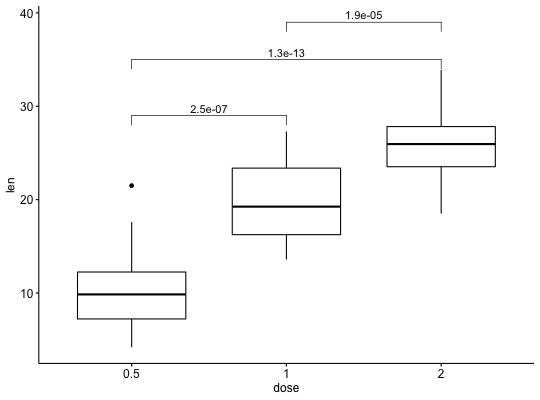
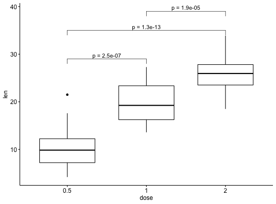

Add Manually P-values to a ggplot
Add manually p-values to a ggplot, such as box blots, dot plots and stripcharts.
stat_pvalue_manual(data, label = "p", y.position = "y.position", xmin = "group1", xmax = "group2", x = NULL, size = 3.88, label.size = size, bracket.size = 0.3, tip.length = 0.03, remove.bracket = FALSE, ...)
Arguments
- data
- a data frame containing statitistical test results. The expected
default format should contain the following columns:
group1 | group2 | p | y.position | etc.group1andgroup2are the groups that have been compared.pis the resulting p-value.y.positionis the y coordinates of the p-values in the plot. - label
- the column containing the label (e.g.: label = "p"). Default
value is "p", for p-value. Can be also an expression that can be formatted
by the
glue()package. For example, when specifying label = "t-test, p = {p}", the expression {p} will be replaced by its value. - y.position
- column containing the coordinates (in data units) to be used for absolute positioning of the label. Default value is "y.position". Can be also a numeric vector.
- xmin
- column containing the position of the left sides of the brackets. Default value is "group1".
- xmax
- (optional) column containing the position of the right sides of the brackets. Default value is "group2". If NULL, the p-values are plotted as a simple text.
- x
- x position of the p-value. Should be used only when you want plot the p-value as text (without brackets).
- size, label.size
- size of label text.
- bracket.size
- Width of the lines of the bracket.
- tip.length
- numeric vector with the fraction of total height that the bar goes down to indicate the precise column. Default is 0.03.
- remove.bracket
- logical, if
TRUE, brackets are removed from the plot. Considered only in the situation, where comparisons are performed against reference group or against "all". - ...
- other arguments passed on to
layer. These are often aesthetics, used to set an aesthetic to a fixed value, likecolor = "red"orsize = 3. They may also be parameters to the paired geom/stat.
See also
Examples
#> # A tibble: 3 x 8 #> .y. group1 group2 p p.adj p.format p.signif method #> <chr> <chr> <chr> <dbl> <dbl> <chr> <chr> <chr> #> 1 len 0.5 1 1.27e- 7 2.50e- 7 1.3e-07 **** T-test #> 2 len 0.5 2 4.40e-14 1.30e-13 4.4e-14 **** T-test #> 3 len 1 2 1.91e- 5 1.90e- 5 1.9e-05 **** T-test# Perform a t-test between groups stat.test <- compare_means( len ~ dose, data = ToothGrowth, method = "t.test" ) stat.test#> # A tibble: 3 x 8 #> .y. group1 group2 p p.adj p.format p.signif method #> <chr> <chr> <chr> <dbl> <dbl> <chr> <chr> <chr> #> 1 len 0.5 1 1.27e- 7 2.50e- 7 1.3e-07 **** T-test #> 2 len 0.5 2 4.40e-14 1.30e-13 4.4e-14 **** T-test #> 3 len 1 2 1.91e- 5 1.90e- 5 1.9e-05 **** T-test# Add manually p-values from stat.test data # First specify the y.position of each comparison stat.test <- stat.test %>% mutate(y.position = c(29, 35, 39)) p + stat_pvalue_manual(stat.test, label = "p.adj")#> Warning: Ignoring unknown aesthetics: xmin, xmax, annotations, y_position# Customize the label with glue expression # (https://github.com/tidyverse/glue) p + stat_pvalue_manual(stat.test, label = "p = {p.adj}")#> Warning: Ignoring unknown aesthetics: xmin, xmax, annotations, y_position